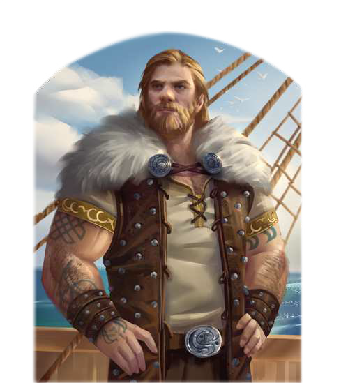

"Swafnir schaut auf die Mutigen, das weiß doch jedes Kind, Tjalva! Du aber hast wohl die Angst schon mit der Milch deiner Mutter eingesogen. Und dein Alter Herr war wohl zu feige, selbst zur See zu fahren, was? Komm, zeig mir, wie gut du den Wellen trotzen kannst. Durch die Bucht nach Prem, bei Swafnir - es gilt!"
Arn von der Hammerfaust-Ottajasko aus Olport ist der Inbegriff des streitbaren Nordmanns: breitschultrig, muskelbepackt, trinkfest und mit einem Mundwerk gesegnet, das seinesgleichen sucht. Zahllose Geschichten echter und vermeintlicher Heldentaten kursieren über ihn und er bezeichnet sich gern großspurig als stärkster Mann der Welt. Dieser Anspruch entspringt nicht allein seiner durchaus beachtlichen Muskelkraft, sondern vielmehr seinem ausgesprochenen Wettbewerbsdenken. Ständig muss er beweisen, dass er der Größte, Stärkste und Beste ist, sei es im Wettschwimmen, Tauziehen, Armdrücken oder beim Zechen. Immer wieder fordert er sich selbst und andere heraus, weil genau das in seinen Augen einen echten Thorwaler ausmacht. Niederlagen steckt er meist sportlich weg, hin und wieder aber packt ihn der Ehrgeiz und er lässt nicht locker, bis er seine Überlegenheit unter Beweis gestellt hat. Begegnen kann man ihm überall in Küstennähe, aber auch ins Landesinnere hat sich der unablässig an seiner eigenen Legende strickende Hüne schon vorgewagt.
Volkes Stimme
- "Arn der Starke hat drei Wochen allein auf Skerdu überlebt und der Seeschlange von Hylailos einen faulen Zahn gezogen.
Das ist ein Kerl, mit dem ich gerne trinke, bei Swafnir! Vielleicht werde ich so ja Teil seiner Legende."
- "Nichts an ihm ist so groß wie sein Ruf dich glauben macht!
Erzählt dir ständig, was er alles besser kann, und führt dich vor, damit er daneben besser aussieht."